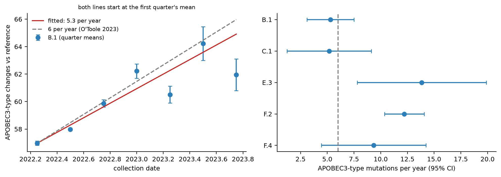
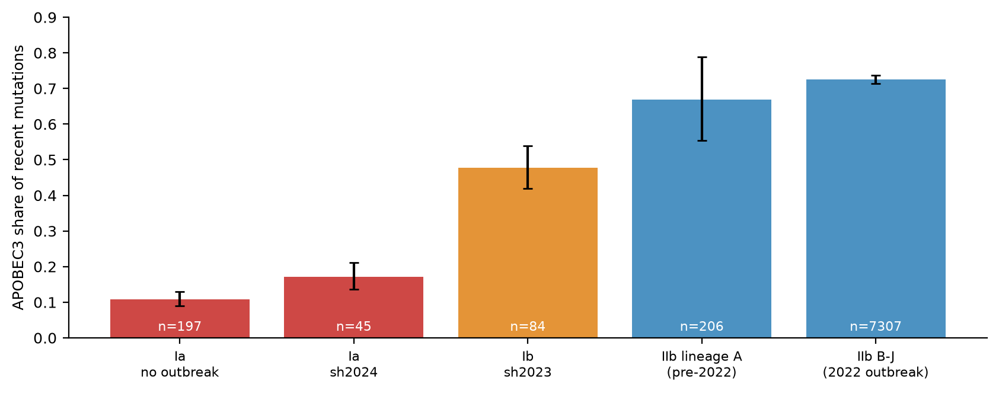
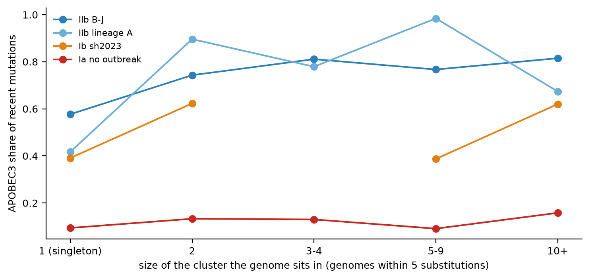

零基礎入門指南
這個病毒是什麼、怎樣用基因組判斷它是「零星傳播」還是「持續傳播」、以及這個項目到底量度了什麼 —— 不預設任何病毒學背景。
在任何基因組分析說得通之前,先知道 mpox 是什麼,以及它跟 RSV 有什麼不同。
Mpox(猴痘)由 monkeypox virus(猴痘病毒,MPXV)引起,屬於 Orthopoxvirus(正痘病毒屬),跟天花病毒是遠親。1958 年首次在實驗室飼養的猴子身上發現,所以得了「猴痘」這個名字;1970 年在剛果民主共和國出現第一個人類病例。世界衛生組織在 2022 年把疾病改稱 mpox。
它的天然宿主(reservoir,病毒平時寄居的動物)至今不確定,一般認為是非洲的囓齒類動物。人類主要是被動物傳染,再經由密切接觸在人與人之間傳開;2022 年起的全球疫情是後者一個很大的例子。
值得知道:這正是「零星」與「持續」的現成案例
mpox 同時有兩種局面。一種是動物傳給人之後,只傳幾個人就停(零星,sporadic)。另一種是在人與人之間連續傳下去(持續,sustained),2022 年的全球疫情就是這一種。這跟 Ye 等人研究的流感「從鳥跳到哺乳類,有的立足有的消失」是同一個問題,只是換成了另一種病毒。
跟 RSV 相比,mpox 是完全不同類型的病毒:
| RSV | Mpox | |
|---|---|---|
| 遺傳物質 | 單股 RNA | 雙股 DNA |
| 基因組大小 | 約 15,000 個字母 | 約 197,000 個字母 |
| 基因數目 | 10 個 | 約 180 個 |
| 在細胞的哪裡複製 | 細胞質 | 細胞質(自帶複製酵素) |
| 突變速度 | 快 | 慢 |
因為基因組有 197,000 個字母,而且基因接近兩百個,本項目不像 RSV 那樣逐個基因分析,而是以整條基因組為單位。
值得知道:一個我們自己犯過、後來改正的說法
一份早期的筆記曾寫「mpox 是在細胞核裡複製的 DNA 病毒」。這是錯的。痘病毒是 DNA 病毒裡的例外:它們在細胞質裡複製,而且自己帶著製造 mRNA 的整套酵素,不依靠宿主細胞核。這個錯誤已經從筆記裡改掉。教訓是:在沒有查證之前,不要用「DNA 病毒在核內複製」這類一般規則去解釋一個特例。
Mpox 病毒分成幾個大支,叫 clade(演化分支):
每個 clade 之下有更細的 lineage(譜系),標籤像 RSV 一樣分層(例如 B.1.2)。Nextclade 的資料庫還有一個叫 outbreak(疫情)的層級:sh2017(IIb 的人傳人疫情)、sh2023(Ib 的疫情)、sh2024(一個 Ia 的疫情)。這套命名專門留給已經確認有持續人傳人的疫情(Ruis et al. 2025, Nature Medicine)。
用基因組去分辨傳播方式的想法很簡單:一次動物傳人事件(spillover)只產生很少的後代病毒,抽樣時很可能只見到一條孤立的基因組;持續的人傳人會留下一大群幾乎一樣的基因組,橫跨很長的時間。這是第 10 節的分群方法的出發點。
RSV 的趨勢分析得出否定的結果,而且 GISAID 的 RSV 序列全部來自人類,沒有宿主可以對比。跟導師討論之後,方向是換一個有「宿主、傳播、零星或持續」這幾個元素的病毒。幾個候選:
| 病毒 | 結果 |
|---|---|
| Nipah 病毒 | 只有 343 條,其中 110 條來自人類,完整基因組 106 條,不夠做趨勢分析。 |
| Mpox | 8,396 + 798 條基因組,宿主幾乎全是人類,但有現成的「零星對持續」案例和已發表的標記(APOBEC3),所以選了它。 |
| 蟲媒病毒 | 導師建議避開(兩個宿主交替,混淆大)。 |
值得知道:這次轉向有一個重要的轉變
RSV 項目量的是成分(GC 含量、二核苷酸),因為論文用它們。但 mpox 的成分幾乎沒有分別(第 13 節)。真正有信息的是突變譜 —— 突變是哪一種。所以這個項目的核心問題從「成分有沒有改變」變成了「突變譜能不能分辨零星和持續傳播」。
RSV 教材第二部分講過 GC 含量和二核苷酸。這裡只補 mpox 需要的新概念。
Mpox 基因組的 GC 含量約 33%。更值得留意的是 CpG O/E(RSV 教材第 16 節):RSV 的基因大多在 0.2–0.4(CpG 被大量壓抑),Nipah 約 0.44,而 mpox 是 1.04 —— 幾乎完全沒有被壓抑。
為什麼一個大型 DNA 病毒沒有 CpG 缺失?這份數據回答不了。RNA 病毒的 CpG 缺失通常被解讀為宿主對病毒 RNA 的壓力(ZAP 蛋白),但痘病毒也在細胞質裡製造自己的 mRNA,所以不能簡單地用「它在細胞核裡複製」來解釋(見第 2 節的改正)。重要的是結果:RSV 那個「NS1/NS2 的 CpG 為什麼缺」的問題,在 mpox 身上根本沒有可解釋的缺口。
一條基因組跟祖先比,會有很多個字母不同,每一個叫一個 substitution(替換),例如 C→T。如果突變完全隨機,12 種可能的替換(4 個字母各變成另外 3 個)應該差不多均勻。實際上不是:不同的原因製造出不同的「mutation spectrum(突變譜)」。
A↔G、C↔T)。所以數「是哪一種突變」,比數「有多少突變」更能說明病毒經歷過什麼。
APOBEC3 是人類細胞裡一組抗病毒酵素。它們把 DNA 裡的 C 變成 U(複製之後在 DNA 上就是 C→T),而且偏好前面是 T 的 C,也就是 TC → TT(在另一條股上看就是 GA → AA)。
病毒在人體裡複製的次數越多,這個酵素編輯的機會就越多。所以在人與人之間持續傳播的 mpox,基因組上會累積大量 TC→TT 和 GA→AA;剛從動物傳入、還沒在人體裡傳過幾代的病毒則很少。O'Toole 等人(Science 2023)用這個指紋做了兩件事:證明 2022 年疫情的病毒其實已經在人類之間傳播了至少六年(自 2016 年左右),並估計人類 mpox 每年累積約 6 個 APOBEC3 類型的突變。
值得知道:跟 Ye 等人(流感)的想法是同一種
流感那篇論文說:「在新宿主裡持續傳播的譜系,GC 含量會逐步下降」,用成分當標記。Mpox 的版本是:「在人類之間持續傳播的譜系,APOBEC3 類型的突變會累積」,用突變譜當標記。想法一樣:一個特徵標記出持續傳播;只是 mpox 的標記是突變譜,而不是成分。
一條基因組身上的突變有新有舊。那些定義整個譜系的老突變,是祖先留下來的,跟這條基因組自己的傳播歷史無關。我們要看的是這條基因組比它最近的親戚多出來的突變,稱為 recent mutations(近期突變)。
做法:用 Nextclade 把每條基因組放進一棵已建好的 mpox 家族樹,取出「相對於樹上最近的節點」多出來的替換(private mutations)。然後數:
APOBEC3 類型 = C→T 而前面一個字母是 T,或 G→A 而後面一個字母是 A。
值得知道:為什麼要設兩個過濾
怎樣定義「零星」和「持續」?如果直接用 APOBEC3 佔比去分類,再拿佔比去比較,是循環論證(第 12 節)。所以這個項目只用基因組之間的差異和採集日期來分類:
只有一條基因組、沒有任何親戚的,叫 singleton(孤立基因組),是最典型的「零星」。
RSV 教材第三部分講過信賴區間、p 值失效、混淆。這裡補三個 mpox 特有的重點。
同一個群裡的基因組是近親,不是獨立的觀察(跟 RSV 教材第 30 節同一個理由)。如果把一個 943 條基因組的大群當成 943 個獨立證據,區間會窄得不真實。
做法是 bootstrap(自助重抽樣):每次抽一整個群,重複幾千次,看佔比的變化範圍,得出 95% 區間。這樣,一個 943 條的大群只算「一個群」。
要小心的地方
「持續」的群很少:clade I 只有 4 個,clade IIb(抽樣後)只有 6 個。每個區間都由很少的群支撐,所以三類比較(零星/中間/持續)只能說「有提示」,不能說「已確定」。更可靠的是第 17 節的「孤立基因組 對 在群裡的基因組」。
想像你先用 APOBEC3 佔比把譜系分成「持續」和「零星」,再證明「持續」的 GC 含量比較低。這個結果沒有意義:APOBEC3 把 C 變成 T,定義上就會降低 GC。你用 A 去分類,再用跟 A 直接相關的 B 去檢驗,必然得到「顯著」。
Nextclade 的「outbreak」標籤也有同樣的問題:它是為已確認人傳人的疫情而設,很可能跟 APOBEC3 訊號有關,不能當作獨立的分類。所以這個項目用群的結構(第 10 節)做分類:它只看基因組之間差多少,不看是哪一種突變。
APOBEC3 每年只改變約 6 個位置,而基因組有 197,000 個字母。所以GC 含量預期每年只下降約 0.00003(一次 C→T 令 G+C 少 1 個,除以 197,000)。但不同基因組之間的 GC 含量隨機波動的標準差約是 0.0002,比每年的變化大七倍。
結果是:直接量 GC,只有部分譜系達到統計顯著;直接數 APOBEC3 突變,B.1 的結果就清楚地顯著(p = 0.0001)。這是為什麼 mpox 上,我們把標記從「成分」換成「突變譜」。
步驟、結果,以及對哪些部分真的成功了的誠實交代。代碼都在 notebooks/Mpox/ 和 notebooks/MpoxI/。
| 步驟 | 做什麼 | 關鍵數字 | 代碼在哪裡 |
|---|---|---|---|
| 14 收集 | 兩次 GISAID 下載,合併 | 8,396 + 798 條 | scripts/merge_gisaid.py |
| 15 品質控制 | 長度 190–200 kb,N ≤ 1% | 7,711 條完整 | scripts/build_mpox_features.py |
| 16 標註 | Nextclade:分支、譜系、替換 | clade IIb 7,711;clade I 797 | scripts/run_mpox_lineage_analysis.py |
| 17 成分與時鐘 | GC、CpG、APOBEC3 突變數 對 日期 | B.1:5.3 個/年 | notebooks/Mpox/02 |
| 18–19 佔比與分群 | APOBEC3 佔比、群結構、孤立基因組檢驗 | IIb:0.58 對 0.80 | scripts/run_mpox_transmission.py |
第一次下載 8,396 條 mpox 基因組(GISAID EpiPox)。查看之後發現兩個問題:
更重要的是,第一次下載裡完整的 clade I 基因組是零:Nextclade 辨認出的 86 條 clade I 序列全是片段(中位數只有 942 個字母,基因組有 197,000 個)。所以第二次下載專門抓 Ia 和 Ib,得到 798 條完整基因組(605 條 Ia、193 條 Ib,其中一條其實是 IIb,已排除),跟第一次沒有重疊。
值得知道:為什麼第二次下載要放寬覆蓋度篩選
第一次把「覆蓋度高」篩選打開,然後再加上「完整 CDS」,clade I 只剩下 2 條。原因是剛果民主共和國的 clade I 基因組常有很多沒讀清楚的位置。我們自己的品質控制容許最多 1% 不明確鹼基,所以不需要 GISAID 替我們篩得那麼嚴。放寬之後得到 798 條。這個教訓適用於任何下載:篩選條件打得太嚴,可能把整個要研究的類別篩掉。
第一次下載 8,396 條裡,7,711 條符合:長度在 190,000–200,000 之間、不明確鹼基不超過 1%;全部是人類或宿主不明。其餘 685 條是片段。Clade I 的 797 條完整基因組有另一個問題:很多條有大量空白(中位數 0.3–3%),只有 334 條空白不超過 1%。突變譜的分析只用這些。
Nextclade 是一套把序列放到參考家族樹上的軟體。它給每條基因組:clade、lineage、outbreak、相對於參考序列的全部替換,以及相對於樹上最近節點的「近期」替換。用了它的 nextstrain/mpox/all-clades 資料庫。
結果:第一次下載的 7,711 條完整基因組全部是 clade IIb(其中最大的是 2022 年疫情的 B.1,5,326 條)。第二次的 797 條是 clade I(Ia 605、Ib 192)。
值得知道:為什麼按「譜系」分析,不能把所有基因組混在一起
跟 RSV 同一個理由(辛普森悖論):整體趨勢可能純粹來自「一個譜系取代另一個」。Mpox 的資料裡,2022 年幾乎全是 B.1,之後 C、E、F 等譜系陸續取代它。如果把所有基因組混在一起看 GC 含量,「下降」可能只是不同譜系的 GC 本來就不同。所以時鐘要在每一個譜系之內做。
成分:各組沒有差別。GC 含量 0.330 到 0.332、CpG O/E 約 1.04、UpA 約 0.99、TpC 約 1.13,每一組都是這樣。Clade I 的 GC 比 IIb 高一點點(0.331 對 0.330),是 clade 之間的差別,不是零星與持續之間的差別。
APOBEC3 時鐘:重現了已發表的結果。在 B.1 譜系之內,每條基因組累積的 APOBEC3 類型突變數隨採集日期上升:

這是這個項目最穩的結果:用一套獨立的流程,重現了一個已知的數字。GC 含量跟著下降的方向(預期每年約 −0.00003),但太小,只有部分譜系達到顯著(C.1、E.3),整體仍然是成分雜訊太大、突變數才靈敏(第 13 節)。
這一節比較不同組別的「近期突變中 APOBEC3 類型佔多少」,資料包括 clade IIb 和 clade I:

順序跟文獻吻合:最像「動物傳人」的 Ia 佔比最低,人類疫情的佔比最高。有兩點對不上:
按第 10 節的分群(差異 ≤ 5 個替換),把基因組分成「孤立」和「在群裡」,比較兩邊的 APOBEC3 佔比。分群本身沒有用到突變譜。

| 組別 | 孤立基因組 | 在群裡(2 條以上) | 差異 | 區間是否排除 0 |
|---|---|---|---|---|
| IIb 2022 疫情譜系 | 0.58 | 0.80 | +0.23(0.13 至 0.29) | 是 |
| IIb 譜系 A(2022 年之前) | 0.42 | 0.83 | +0.42(0.15 至 0.60) | 是 |
| Ib 疫情(sh2023) | 0.39 | 0.60 | +0.20(−0.02 至 0.34) | 邊緣 |
| Ia 無疫情 | 0.09 | 0.12 | +0.02(−0.03 至 0.08) | 否 |
這是這個項目的正面結果:在 clade IIb(已適應人類的分支)裡,沒有看到後續傳播的孤立基因組,APOBEC3 佔比明顯低於在傳播鏈裡的基因組,區間不含 0。Ib 方向相同但區間碰到 0。Ia 沒有訊號,因為佔比到處都低。
強健性:把距離閾值設為 3、5、10 個替換,再配合三種品質過濾共九種設定,clade IIb 的「零星」類每一種設定下都是最低(0.49–0.75 對 0.78–0.93)。Clade I 則不穩定:「持續」類在閾值 3、5 時最高(0.64–0.73),閾值 10 時卻掉到 0.24,所以 clade I 的三類結果不應當依賴。
這個正面結果的局限
怎樣看待這個結果
已發表的工作(O'Toole 2023)用 APOBEC3 指紋說明「一個譜系在人類之間傳播」。這裡的單位是一條基因組:在同一個譜系家族之內,沒有親戚的基因組,看起來比在傳播鏈裡的基因組更少受 APOBEC3 編輯。這是一個窄的、有限的新發現,不是全新的標記。
把「近期突變」改成用自己建的樹(IQ-TREE 加祖先序列重建)得出的突變,看孤立基因組的差異是不是 Nextclade 那棵樹的抽樣造成的假象。這是把現有結果變得可以辯護的最關鍵一步。
為什麼 Ia 疫情的 APOBEC3 佔比這麼低?要檢查是疫情太新、還是定序錯誤。要看金沙薩與其他地區是否不同。
「先用群結構分類,再用突變譜比較」可以搬到有真實宿主變化的病毒:SARS-CoV-2(人、貂、鹿)或 H5N1(鳥、牛、人)。需要先從 GISAID 匯出元數據(宿主、日期、譜系、地點),評估每個宿主有多少條序列。
本指南用到的專業名詞。RSV 教材的名詞表也適用。
| English | 中文 | 說明 |
|---|---|---|
| APOBEC3 | APOBEC3 酵素 | 人類細胞裡把 DNA 的 C 變成 U 的抗病毒酵素家族,偏好 TC 位置。在病毒基因組上留下 C→T(另一股上是 G→A)的指紋。 |
| APOBEC3 share | APOBEC3 佔比 | 近期突變中屬於 APOBEC3 類型的比例。 |
| Bootstrap | 自助重抽樣 | 反覆從數據裡抽樣,看估計值的變化範圍。本項目每次抽一整個「群」。 |
| Clade | 演化分支 | 病毒家族樹上的大分支。Mpox 有 I(Ia、Ib)和 II(IIa、IIb)。 |
| Cluster | 群 | 差異不超過 5 個替換的一串基因組。 |
| Cytoplasm | 細胞質 | 細胞核以外的細胞內容。痘病毒在這裡複製。 |
| Mutation spectrum | 突變譜 | 各種替換(C→T、G→A 等)的相對數量。不同成因留下不同的譜。 |
| Nextclade | Nextclade 軟體 | 把序列放進參考家族樹,給出 clade、lineage 與替換的軟體。 |
| Orthopoxvirus | 正痘病毒屬 | 包括天花病毒與猴痘病毒的病毒屬。 |
| Outbreak (Nextclade) | 疫情(命名層級) | Nextclade 為已確認持續人傳人的疫情設的標籤:sh2017、sh2023、sh2024。 |
| Private mutation / recent mutation | 私有突變 / 近期突變 | 一條基因組相對於樹上最近節點多出來的替換。 |
| Reservoir | 天然宿主 | 病毒平時寄居的動物。 |
| Singleton | 孤立基因組 | 在所用數據裡沒有任何一條差異 ≤ 5 個替換的基因組。 |
| Spillover | 跨物種傳入 | 病毒從動物傳到人。 |
| Sporadic / Sustained | 零星 / 持續 | 病毒傳幾個個案就停(零星),或在新宿主裡連續傳下去(持續)。 |
| Substitution | 替換 | 一個位置的字母變成另一個,例如 C→T。 |